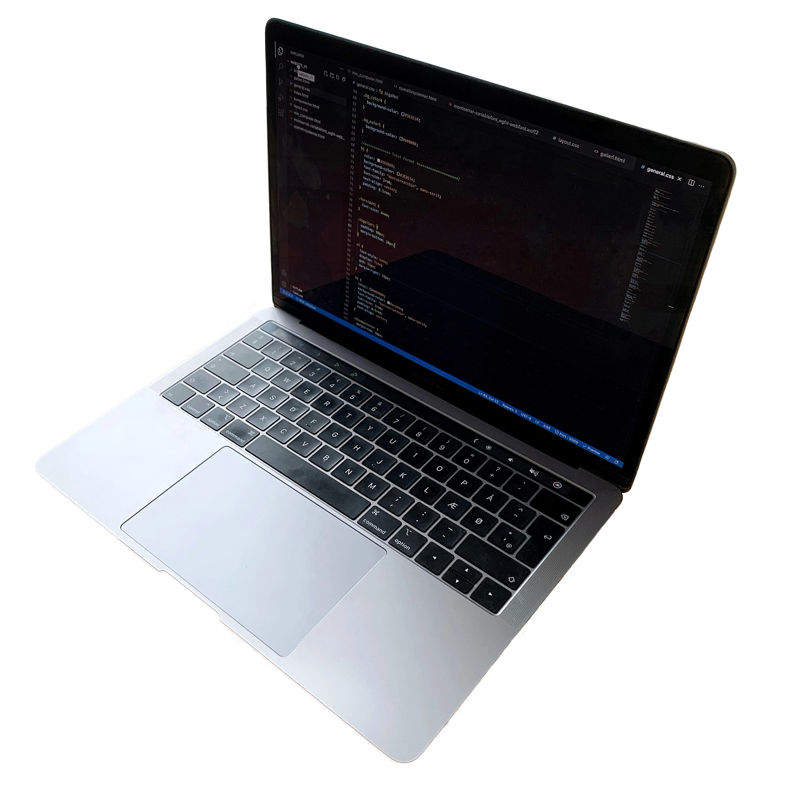

Min Computer

Type
Min computer er 2019, MacBook Pro 13 med touch bar, som har integreret Touch-ID-sensor. Skærmen er en 13,3” med indbygget Retina-Display, LED-baggrundsbelysning, IPS-teknologi og True Tone-teknologi. Mindre end 1,5cm tynd og kun 1,37kg. Den er dermed designet til brug på farten, men går ikke på kompromis med ydelsen.
Specifikationer
- MacBook Pro: (13-inch, 2019, Two Thunderbolt 3 ports)
- Processor: 1,4 GHz Quad-Core Intel Core i5
- Hukommelse: 8 GB 2133 MHz LPDDR3
- Grafik: Intel Iris Plus Graphics 645 1536 MB
- Retina-display med True Tone: 13,3'' (2560 × 1600)